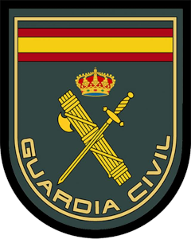
La Guardia Civil es un instituto armado español, una de las dos fuerzas de seguridad de ámbito nacional, junto con el Cuerpo Nacional de Policía. Como gendarmería, tiene naturaleza militar y cumple, entre otras, funciones de policía, dependiendo de los Ministerios de Interior y de Defensa.
Pulsa Aqui Para Ir A La Pagina De La Guardia Civil
¿Cuánto cobra la Guardia Civil?
La Guardia civil suelen cobrar unos 10.823€ anuales tambien depende del rango que seas los SARGENTOS cobran 14.132€ y los CAPITANES cobran 16.071€
¿A qué numero llamar en caso de que lo necesite?
Número:062
¿Qué especialidades hay dentro de la Guardia Civil?
Seguridad Ciudadana
¿Qué función tiene la Seguridad Ciudadana?
La misión de las unidades territoriales de Seguridad Ciudadana es la de proteger del libre ejercicio de los derechos y libertades de los ciudadanos mediante la prevención y primera investigación de las conductas delictivas, así como el auxilio y atención a los requerimientos de la población las 24 horas del día
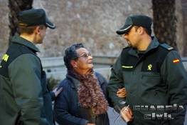
Servicio de Protección de la Naturaleza
¿Qué función tiene tiene el Seprona?
El Servicio de Protección de la Naturaleza es una especialidad de la Guardia Civil de España, encargada de velar por la conservación de la naturaleza y los recursos hídricos
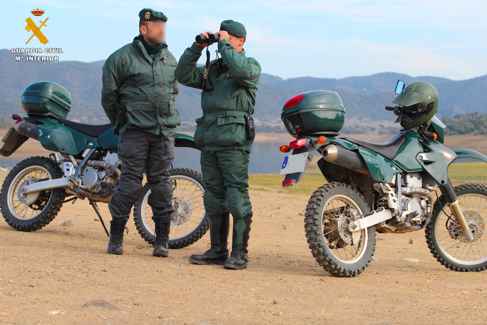
Agrupación de Tráfico
¿Qué función tiene la Guardia Civil De Tráfico?
La Agrupación de Tráfico es la unidad de la Guardia Civil especializada y específicamente concebida, preparada y organizada para el ejercicio de las funciones asignadas al Estado, a través del Ministerio del Interior, en materias de tráfico, transporte y seguridad vial.
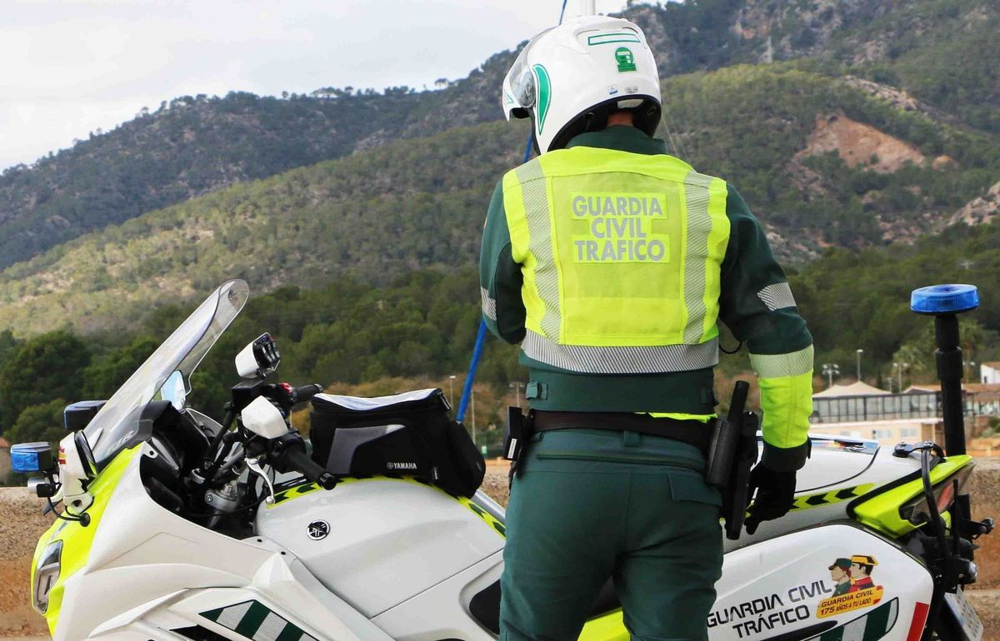
Unidad Especial de Intervención
¿Qué es la UEI?
La Unidad Especial de Intervención es una unidad especial de intervención de élite de la Guardia Civil española. Está concebida como una unidad de élite central única especializada en operaciones de alto riesgo y para el cumplimiento de sus misiones específicas dentro o fuera del territorio nacional.
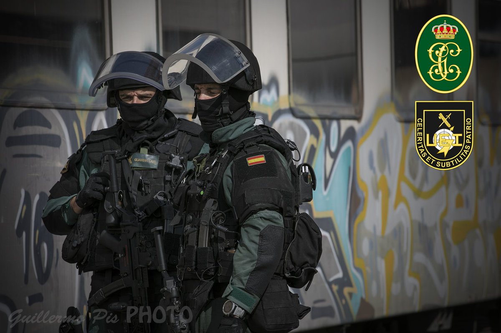
Servicio de Policía Judicial
¿Qué es el Servicio de Policia Judicial?
La policía judicial es una unidad especializada dentro de las Fuerzas y Cuerpos de Seguridad del Estado dirigida a la lucha contra la delincuencia y al servicio de los órganos que se encargan de liderar esa lucha, los tribunales penales y el Ministerio Fiscal
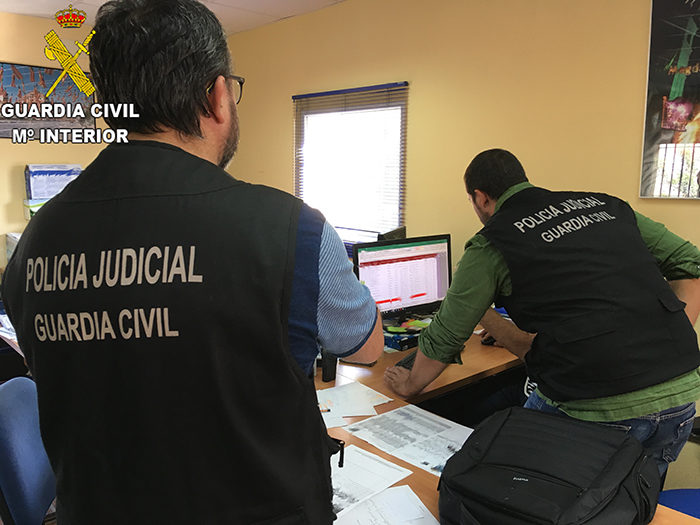
Servicio de Explosivos y Defensa NRBQ
¿Qué es la N.R.B.Q?
Es la Unidad a la que corresponde atender todos los cometidos relacionados con la búsqueda, neutralización y desactivación de artefactos explosivos, pudiendo apoyar a otros grupos de especialistas de la organización periférica.
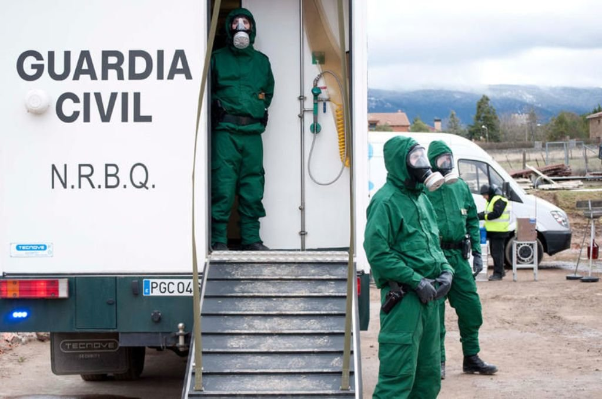
Control de Armas
¿Qué es el Control De Armas?
Tiene como misión específica la planificación y control de las actividades encaminadas al ejercicio de las competencias que la normativa sobre armas y explosivos encomienda a la Guardia Civil en todo el territorio nacional. Asimismo, constituye el órgano asesor y consultivo en esta materia del Ministerio del Interior.
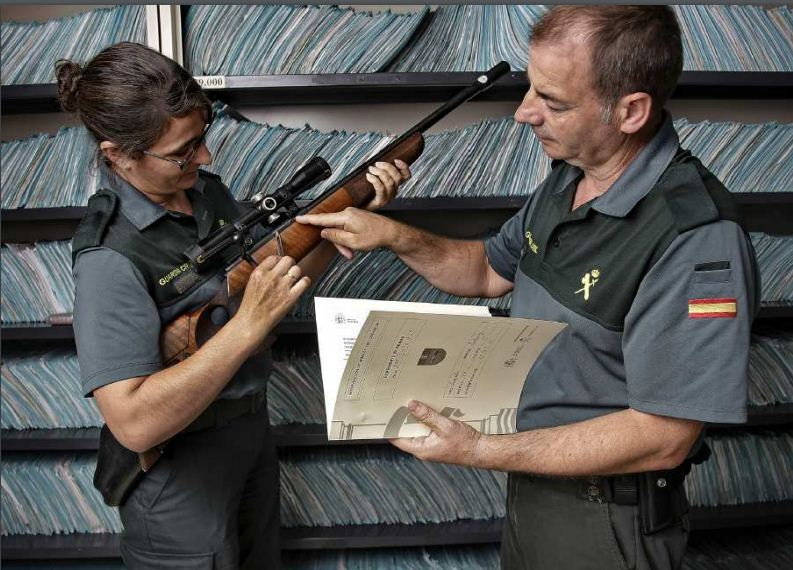
Servicio Aéreo
¿Qué es el SAER?
Es la unidad que gestiona y opera los medios aéreos de la Guardia Civil.
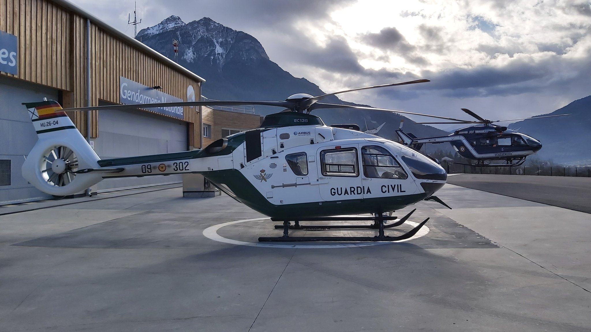
Servicio Marítimo
¿Qué es el SEMAR?
es la unidad de la Guardia Civil dedicada a la vigilancia de las aguas territoriales españolas. Se constituyó por un Real Decreto de 22 de febrero de 1991.
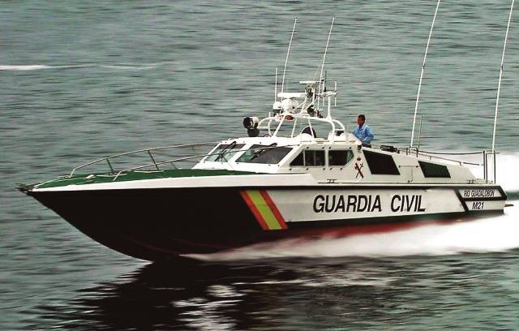
Servicio de Montaña
¿Qué es el Servicio De Montaña?
Los Grupos de Rescate Especial de Intervención en Montaña, originariamente Grupos Rurales Especiales de Intervención en Montaña, son unidades especiales del Servicio de Rescate e Intervención en Montaña
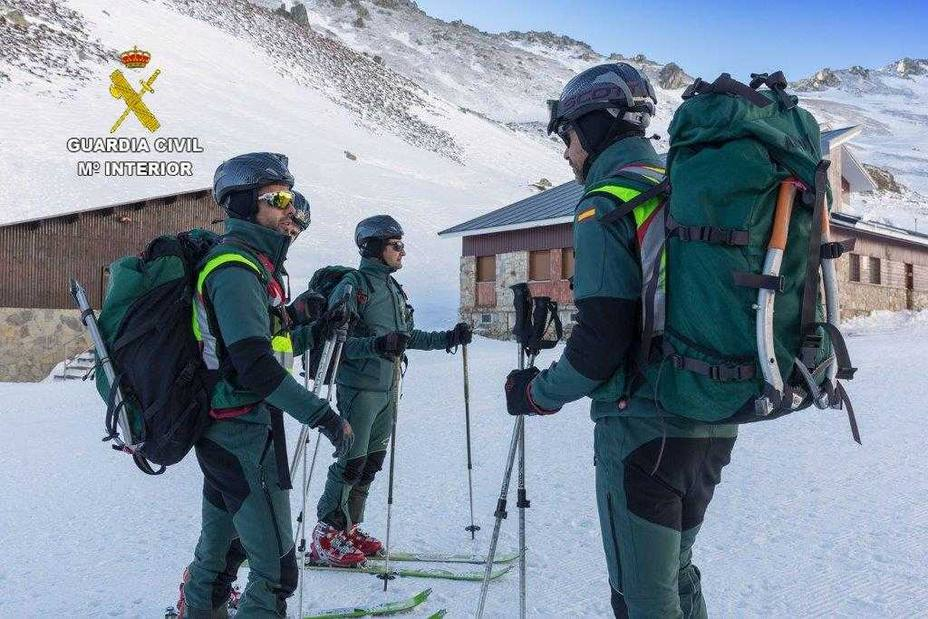
Agrupación de Reserva y Seguridad
¿Qué es la GRS?
La Agrupación de Reserva y Seguridad es la principal Unidad de Reserva de la Guardia Civil, especialmente concebida, preparada y organizada para cumplir su misión específica de prevención, mantenimiento y, en su caso, restablecimiento de la seguridad pública.
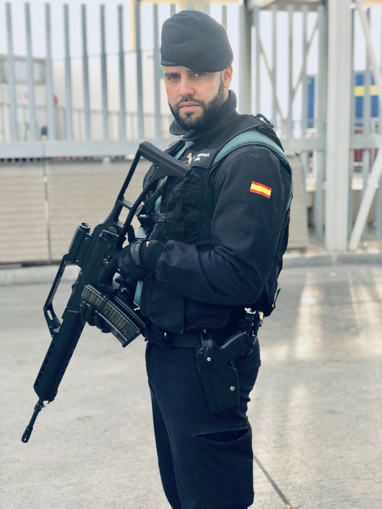
Servicio Cinológico
¿Qué es el SECIR?
El Servicio Cinológico es el órgano encargado de: Dirección técnica e inspección de las Unidades dotadas de perros. Gestión, administración y apoyo al ganado y animales de utilidad para el servicio.
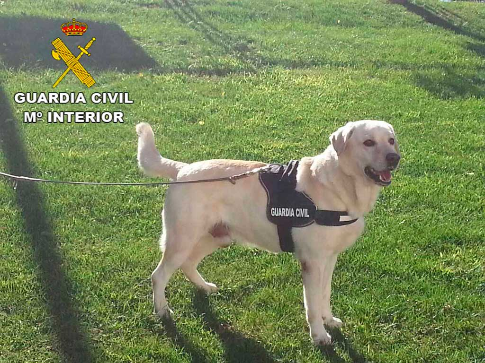
Grupo Especial De Actividades Subacuáticas
¿Qué es el GEAS?
El Grupo Especial de Actividades Subacuáticas de la Guardia Civil es la unidad de la Guardia Civil española encargada de la búsqueda y rescate de personas, la localización y recuperación de objetos en el medio acuático, entre otras misiones; este grupo se encuadra dentro de la UAS creada en 1981.
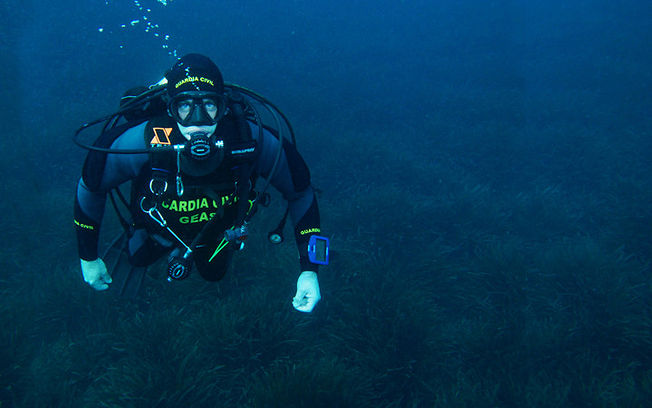